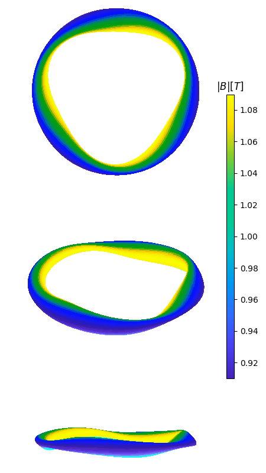

API Reference
All of the functionality of pyQSC is contained
in a single class, qsc.Qsc.
For many applications, all that is needed is the constructor
of this class, which drives the individual steps of the calculation.
qsc.Qsc class
- class qsc.Qsc(rc, zs, rs=[], zc=[], nfp=1, etabar=1.0, sigma0=0.0, B0=1.0, I2=0.0, sG=1, spsi=1, nphi=61, B2s=0.0, B2c=0.0, p2=0.0, order='r1')
Bases:
objectThis is the main class for representing the quasisymmetric stellarator construction.
- B_contour(r=0.1, ntheta=100, nphi=120, ncontours=10, show=True)
Plot contours of constant B, with B the modulus of the magnetic field, as a function of Boozer coordinates theta and varphi
- Parameters:
r (float) – near-axis radius r where to create the surface
ntheta (int) – Number of grid points to plot in the Boozer poloidal angle.
nphi (int) – Number of grid points to plot in the Boozer toroidal angle.
ncontours (int) – number of contours to show in the plot
show (bool) – Whether or not to call the matplotlib
show()command.
- B_fieldline(r=0.1, alpha=0, phimax=None, nphi=400, show=True)
Plot the modulus of the magnetic field B along a field line with the Boozer toroidal angle varphi acting as a field-line following coordinate
- Parameters:
r (float) – near-axis radius r where to create the surface
alpha (float) – Field-line label
phimax (float) – Maximum value of the field-line following parameter varphi
nphi (int) – resolution of the phi grid
show (bool) – Whether or not to call the matplotlib
show()command.
- B_mag(r, theta, phi, Boozer_toroidal=False)
Function to calculate the modulus of the magnetic field B for a given near-axis radius r, a Boozer poloidal angle theta (not vartheta) and a cylindrical toroidal angle phi if Boozer_toroidal = True or the Boozer angle varphi if Boozer_toroidal = True
- Parameters:
r – the near-axis radius
theta – the Boozer poloidal angle
phi – the cylindrical or Boozer toroidal angle
Boozer_toroidal – False if phi is the cylindrical toroidal angle, True for the Boozer one
- Bfield_cartesian(r=0, theta=0)
Function to calculate the magnetic field vector B=(B_x,B_y,B_z) at every point along the axis (hence with nphi points) where x, y and z are the standard cartesian coordinates for a given near-axis radius r and a Boozer poloidal angle vartheta (not theta).
- Parameters:
r – the near-axis radius
theta – the Boozer poloidal angle vartheta (= theta-N*phi)
- Bfield_cylindrical(r=0, theta=0)
Function to calculate the magnetic field vector B=(B_R,B_phi,B_Z) at every point along the axis (hence with nphi points) where R, phi and Z are the standard cylindrical coordinates for a given near-axis radius r and a Boozer poloidal angle vartheta (not theta). The formulae implemented here are eq (3.5) and (3.6) of Landreman (2021): Figures of merit for stellarators near the magnetic axis, JPP
- Parameters:
r – the near-axis radius
theta – the Boozer poloidal angle vartheta (= theta-N*phi)
- Frenet_to_cylindrical(r, ntheta=20)
For a given minor radius coordinate \(r\), compute the shape of the flux surface in standard cylindrical coordinates \((R, \phi, Z)\). This function returns \(R\) and \(Z\) as 2D arrays corresponding to dimensions
(theta, phi), wherethetais the Boozer poloidal angle andphiis the standard toroidal angle. Also returned isphi0(theta, phi), defined as follows: for given(theta, phi), move to the magnetic axis while holding the Boozer poloidal and toroidal angles fixed; the standard toroidal angle at that resulting point on the axis isphi0.- Parameters:
r – near-axis radius r of the desired boundary surface
ntheta – resolution in the poloidal angle theta
Returns: 3 element tuple containing
(R, Z, phi0). Each entry has shape(ntheta, nphi).
- calculate()
Driver for the main calculations.
- calculate_grad_B_tensor()
Compute the components of the grad B tensor, and the scale length L grad B associated with the Frobenius norm of this tensor. The formula for the grad B tensor is eq (3.12) of Landreman (2021): Figures of merit for stellarators near the magnetic axis, JPP
self should be an instance of Qsc with X1c, Y1s etc populated.
- calculate_grad_grad_B_tensor(two_ways=False)
Compute the components of the grad grad B tensor, and the scale length L grad grad B associated with the Frobenius norm of this tensor. self should be an instance of Qsc with X1c, Y1s etc populated. The grad grad B tensor in discussed around eq (3.13) Landreman (2021): Figures of merit for stellarators near the magnetic axis, JPP although an explicit formula is not given there.
If
two_waysisTrue, an independent calculation of the tensor is also computed, to confirm the answer is the same.
- calculate_r2()
Compute the O(r^2) quantities.
- calculate_r3()
Compute the O(r**3) contributions to X and Y needed for full consistency of B through O(r**2), as detailed in section 3 of Landreman & Sengupta, J Plasma Physics (2019). This subroutine is based on the order_r_option = “r3_flux_constraint” equations from the fortran quasisymmetry code.
- calculate_r_singularity(high_order=False)
- calculate_shear(B31c=0)
Compute the magnetic shear iota_2 (so iota=iota0+r^2*iota2) which comes from the solvability condition of the generalised sigma equation at order O(r**3), as detailed in Rodriguez et al., to be published (2021). This calculation is taken for a standard MHS equilibrium configuration. B31c can be given as an input. One may generalise this calculation straightforwardly.
- change_nfourier(nfourier_new)
Resize the arrays of Fourier amplitudes. You can either increase or decrease nfourier.
- configurations = ['r1 section 5.1', 'r1 section 5.2', 'r1 section 5.3', 'r2 section 5.1', 'r2 section 5.2', 'r2 section 5.3', 'r2 section 5.4', 'r2 section 5.5', 'precise QA', 'precise QA+well', 'precise QH', 'precise QH+well', '2022 QA', '2022 QH nfp2', '2022 QH nfp3 vacuum', '2022 QH nfp3 beta', '2022 QH nfp4 long axis', '2022 QH nfp4 well', '2022 QH nfp4 Mercier', '2022 QH nfp7']
- convert_to_spline(array)
- flux_tube(r=0.12, alpha=0, delta_r=0.03, delta_alpha=0.2, delta_phi=12.566370614359172, ntheta=80, nphi=150, ntheta_fourier=20, nphi_tube=2000, savefig=None, show=True, **kwargs)
Plot the flux tube at a specific alpha and psi with a volume of delta alpha, delta psi and delta phi. The variable alpha is the field-line label alpha=theta-q varphi with theta and varphi the poloidal and toroidal Boozer angles. Phi is the cylindrical toroidal angle and psi=Bbar r^2/2
- Parameters:
r (float) – radial location of the field-line
alpha (float) – field-line label for the field-line
delta_r (float) – radial length of the field-line
delta_alpha (float) – poloidal length of the field-line
delta_phi (float) – toroidal length of the field-line
ntheta (int) – Number of grid points to plot in the poloidal angle.
nphi (int) – Number of grid points to plot in the toroidal angle.
ntheta_fourier (int) – Resolution in the Fourier transform to cylindrical coordinates
nphi_tube (int) – Resolution of the field-lines in the flux tube plot
savefig (str) – Filename prefix for the png files to save. Note that a suffix including
.pngwill be appended. IfNone, no figure files will be saved.show (bool) – Whether or not to call the matplotlib/mayavi
show()command.
- classmethod from_cxx(filename)
Load a configuration from a
qsc_out.<extension>.ncoutput file that was generated by the C++ version of QSC. Almost all the data will be taken from the output file, over-writing any calculations done in python when the new Qsc object is created.
- classmethod from_paper(name, **kwargs)
Get one of the configurations that has been used in papers. Available values for
nameare:"r1 section 5.1" "r1 section 5.2" "r1 section 5.3" "r2 section 5.1" "r2 section 5.2" "r2 section 5.3" "r2 section 5.4" "r2 section 5.5" "precise QA" "precise QA+well" "precise QH" "precise QH+well" "2022 QA" "2022 QH nfp2" "2022 QH nfp3 vacuum" "2022 QH nfp3 beta" "2022 QH nfp4 long axis" "2022 QH nfp4 well" "2022 QH nfp4 Mercier" "2022 QH nfp7"
The list of available configurations is also available as
Qsc.configurations. The configurations that begin with"r1"refer to sections in Landreman, Sengupta, and Plunk, “Direct construction of optimized stellarator shapes. Part 2. Numerical quasisymmetric solutions”, Journal of Plasma Physics 85, 905850103 (2019). The configurations that begin with"r2"refer to sections in Landreman and Sengupta, “Constructing stellarators with quasisymmetry to high order”, Journal of Plasma Physics 85, 815850601 (2019). The configurations that begin with"precise"are fits to the configurations in Landreman and Paul, “Magnetic Fields with Precise Quasisymmetry for Plasma Confinement”, Physical Review Letters 128, 035001 (2022). The configurations that begin with"2022"refer to Landreman, “Mapping the space of quasisymmetric stellarators using optimized near-axis expansion”, J. Plasma Phys. 88, 905880616 (2022).You can specify any other arguments of the
Qscconstructor inkwargs. You can also usekwargsto override any of the properties of the configurations from the papers. For instance, you can modify the value ofetabarin the first example usingq = qsc.Qsc.from_paper('r1 section 5.1', etabar=1.1)
- get_boundary(r=0.1, ntheta=40, nphi=130, ntheta_fourier=20, mpol=13, ntor=25)
Function that, for a given near-axis radial coordinate r, outputs the [X,Y,Z,R] components of the boundary. The resolution along the toroidal angle phi is equal to the resolution nphi for the axis, while ntheta is specified by the used.
- Parameters:
r (float) – near-axis radius r where to create the surface
ntheta (int) – Number of grid points to plot in the poloidal angle.
nphi (int) – Number of grid points to plot in the toroidal angle.
ntheta_fourier (int) – Resolution in the Fourier transform to cylindrical coordinates
mpol – resolution in poloidal Fourier space
ntor – resolution in toroidal Fourier space
- get_dofs()
Return a 1D numpy vector of all possible optimizable degrees-of-freedom, for simsopt.
- grad_B_tensor_cartesian()
Function to calculate the gradient of the magnetic field vector B=(B_x,B_y,B_z) at every point along the axis (hence with nphi points) where x, y and z are the standard cartesian coordinates.
- grad_grad_B_tensor_cartesian()
Function to calculate the gradient of of the gradient the magnetic field vector B=(B_x,B_y,B_z) at every point along the axis (hence with nphi points) where x, y and z are the standard cartesian coordinates.
- grad_grad_B_tensor_cylindrical()
Function to calculate the gradient of of the gradient the magnetic field vector B=(B_R,B_phi,B_Z) at every point along the axis (hence with nphi points) where R, phi and Z are the standard cylindrical coordinates.
- init_axis()
Initialize the curvature, torsion, differentiation matrix, etc.
- mercier()
Compute the terms in Mercier’s criterion.
- min_R0_penalty()
This function can be used in optimization to penalize situations in which min(R0) < min_R0_constraint.
- plot(newfigure=True, show=True)
Generate a matplotlib figure with an array of plots, showing the toroidally varying properties of the configuration.
- Parameters:
newfigure – Whether to create a new matplotlib figure.
show – Whether to call matplotlib’s
show()function after making the plots.
- plot_axis(nphi=100, frenet=True, nphi_frenet=80, frenet_factor=0.12, savefig=None, show=True)
Plot axis shape and the Frenet-Serret frame along the axis (optional). If frenet is true, creates a mayavi instance showing the axis and nphi_frenet times 3 vectors, corresponding to the tangent, normal and binormal vectors. If frenet is false, creates a matplotlib instance with only a single axis shape curve shown.
- Parameters:
nphi (int) – Number of grid points in the axis shape
frenet (bool) – True plots the Frenet-Serret frame, False it doesn’t
nphi_frenet (int) – Number of Frenet-Serret vectors to show
frenet_factor (float) – Size of Frenet-Serret vectors
savefig (string) – filename to save resulting figure in png format. Note that
.pngwill be appended. IfNone, no figure file will be saved.show (bool) – Whether or not to call the matplotlib/mayavi
show()command.
- plot_boundary(r=0.1, ntheta=80, nphi=150, ntheta_fourier=20, nsections=8, fieldlines=False, savefig=None, colormap=None, azim_default=None, show=True, **kwargs)
Plot the boundary of the near-axis configuration. There are two main ways of running this function.
If
fieldlines=False(default), 2 matplotlib figures are generated:A 2D plot with several poloidal planes at the specified radius r with the corresponding location of the magnetic axis.
A 3D plot with the flux surface and the magnetic field strength on the surface.
If
fieldlines=True, both matplotlib and mayavi are required, and the following 2 figures are generated:A 2D matplotlib plot with several poloidal planes at the specified radius r with the corresponding location of the magnetic axis.
A 3D mayavi figure with the flux surface the magnetic field strength on the surface and several magnetic field lines.
- Parameters:
r (float) – near-axis radius r where to create the surface
ntheta (int) – Number of grid points to plot in the poloidal angle.
nphi (int) – Number of grid points to plot in the toroidal angle.
ntheta_fourier (int) – Resolution in the Fourier transform to cylindrical coordinates
nsections (int) – Number of poloidal planes to show.
fieldlines (bool) – Specify if fieldlines are shown. Using mayavi instead of matplotlib due to known bug https://matplotlib.org/2.2.2/mpl_toolkits/mplot3d/faq.html
savefig (str) – Filename prefix for the png files to save. Note that a suffix including
.pngwill be appended. IfNone, no figure files will be saved.colormap (cmap) – Custom colormap for the 3D plots
azim_default – Default azimuthal angle for the three subplots in the 3D surface plot
show – Whether or not to call the matplotlib/mayavi
show()command.kwargs – Any additional key-value pairs to pass to matplotlib’s plot_surface.
This function generates plots similar to the ones below:

- r1_diagnostics()
Compute various properties of the O(r^1) solution, once sigma and iota are solved for.
- set_dofs(x)
For interaction with simsopt, set the optimizable degrees of freedom from a 1D numpy vector.
- solve_sigma_equation()
Solve the sigma equation.
- to_RZ(points)
Function to convert a set of points in (r,theta,phi0) coordinates where r=sqrt(2*psi/B0) is the near-axis radius, theta is the Boozer poloidal angle and phi0 is the cylindrical angle phi on the axis to cylindrical coordinates (R,Z)
- Parameters:
points – an array of floats with dimension Nx3 with N the
having (number of points to evaluate with each points) –
the (r,theta,phi0) –
- to_vmec(filename, r=0.1, params={}, ntheta=20, ntorMax=14)
Outputs the near-axis configuration calculated with pyQSC to a text file that is able to be read by VMEC.
- Parameters:
filename – name of the text file to be created
r – near-axis radius r of the desired boundary surface
params – a Python dict() instance containing one/several of the following parameters: mpol, delt, nstep, tcon0, ns_array, ftol_array, niter_array
ntheta – resolution in the poloidal angle theta for the Frenet_to_cylindrical and VMEC calculations
ntorMax – maximum number of NTOR in the resulting VMEC input file
{kind=link}
{kind=link}
{kind=link}